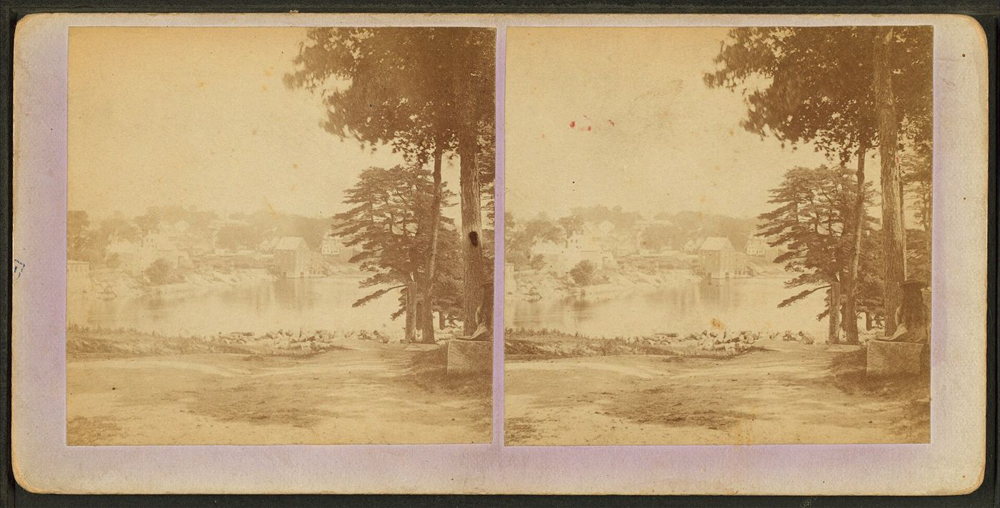
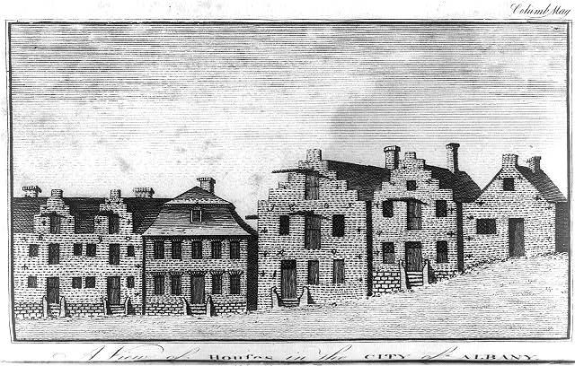

Biography
Barnabas Tufts of Gloucester served as a drummer in Col. Wigglesworth's regiment. He was paid travel allowance for the 360-mile journey home from Albany.
Service Record
Town: Medford; Gloucester (Cape Ann); Topsham, Me. · Dates: 1742/3 – 1795
“TUFTS, BARNABAS, Gloucester. Drummer, Capt. Nicholas Blasdel's co., Col. Wigglesworth's regt.; pay abstract for travel allowance, etc., from Albany home; 360 miles travel allowed said Tufts; warrant allowed in Council Jan. 21, 1777.”
Massachusetts Soldiers and Sailors of the Revolutionary War, vol. XVI (1907), p. 131 · page scan

Family Connection
Vol. II places him as Barnabas5, son of John4 (see below).
Spouse(s)
Not found in the sources checked (Brooks 1855 Register of Families; Wild; Find a Grave data on file; Tufts Kinsmen Vol. I extract).
From Tufts Kinsmen
Vol. II records the family of Richard6 and Rhoda (Goss) Tufts (Vol. I ref. 90-6), “from Barnabas5, John4, James3, Jonathan2, Peter1.” Their children were born in “Gloucester [Rockport]” from 1812. (Tufts Kinsmen, Vol. II, p. 77)
Possible match to the MSS Barnabas Tufts of Gloucester. The town agrees, but Vol. II gives no service record or dates for Barnabas5.
Vol. I
Barnabas Tufts, brickmaker, family no. 37-8: born 12 Feb. 1742/3 in Medford; died 1795 in Topsham, Me.; drummer in the Revolution, serving at Albany, N.Y.; from 1760 divided his time between Cumberland County, Me., and Cape Ann, Mass. (Tufts Kinsmen, Vol. I, p. 156, family no. 37-8)
Identity match: strong. Drummer, service at Albany, and Cape Ann (Gloucester) all agree with the MSS entry “TUFTS, BARNABAS, Gloucester. Drummer … from Albany home.”
Authoritative IDs / Index Numbers
| Source | ID / status |
|---|---|
| Perseus person index (auth=) | Checked, not found (no auth=tufts,… key for this name in Brooks, the Medford Historical Register or Historic Leaves). |
| Find a Grave memorial | Checked, not found |
| Brooks, History of Medford (1855) register no. | Checked, no entry confidently matched |
| Mass. Soldiers and Sailors | vol. XVI, p. 131 |
| DAR ancestor no. | Note: Pending further work. |
| FamilySearch ID | Note: Pending further work. |
| Geni profile | Note: Pending further work. |
| WikiTree ID | Note: Pending further work. |
| Town / vital records | Medford VRs not yet checked by volume and page |
Only IDs confirmed against dates and family are given as matches. “Not yet checked” means the source has not been searched; “Checked, not found” means it was searched without a match.
Pictures


.jpg){kind=link}



Links and Resources
Every source, record, map, survey, marker and artifact tied to this person, gathered in one place. Page numbers are given where a book is cited.
Maps, Surveys and Artifacts
- Massachusetts Soldiers and Sailors of the Revolutionary War, vol. XVI (1907), p. 131 · page scan
- — Topsham, Maine, from Mason Street, about 1865–1880. A 19th-century view of Topsham from Mason Street. Image: G. W. Barnes (NYPL). Public domain. Source: Wikimedia Commons A View of Houses in the City
- Source: Wikimedia Commons — Topsham, Maine, from Mason Street, about 1865–1880. A 19th-century view of Topsham from Mason Street.Image: G. W. Barnes (NYPL). Public domain.
- — Topsham, Maine, from Mason Street, about 1865–1880. A 19th-century view of Topsham from Mason Street.Image: G. W. Barnes (NYPL). Public domain. Source: Wikimedia Commons
- Source: Wikimedia Commons — A View of Houses in the City of Albany (1789). An etching of Albany houses published in 1789, from the Library of Congress.Image: Library of Congress Prints & Photographs. Public domain.